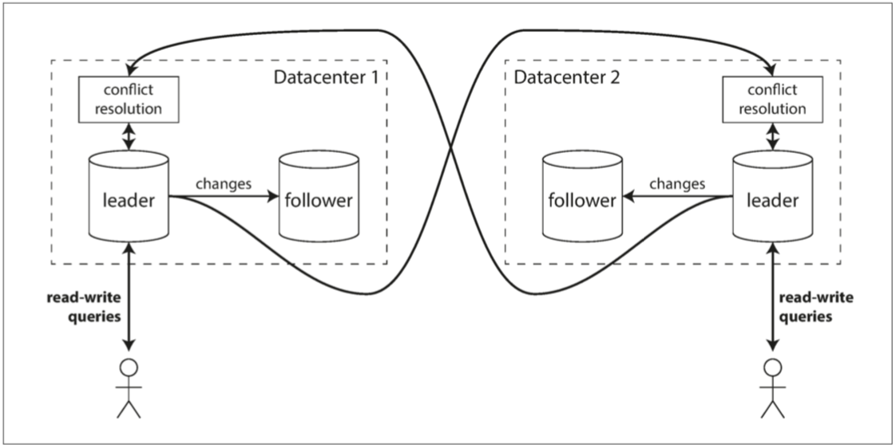

今天推荐一本我近期读到的质量很高的技术书（也可以说是我今年读到的最好的一本技术类书籍）：《数据密集型应用系统设计》，属于「动物书」系列，封面是一只野猪。这本书我从上个月 18 号开始读，每天拿出一个半小时左右阅读，于昨天（12月28号）读完，刚好用了 40 天，全书 500 多页，也算是一本大部头了。
本书作者 Martin Kleppmann 是英国剑桥大学分布式系统方向的研究员。之前在 LinkedIn 和 Rapportive 等互联网公司做过软件工程师，负责大规模数据基础设施建设。在阅读过程中，我多次惊叹作者的知识面简直广得惊人，也善于举一反三，知识之间互相关联。
全书脉络清晰，分为三个部分：
第一部分介绍数据相关的基本思想，包括如何评价一个数据库（第一章），数据在逻辑上如何组织（第二章），在磁盘中如何分布（第三章），在表现上如何编码（第四章）。这些思想是一个数据系统的基本，无论它是单机的，还是分布式的。
第二部分介绍分布式环境下的技术，包括复制（第五章）、分区（第六章）、分布式事务与共识（第七、八、九章）。这些技术大多是基于同构系统的，分布式事务虽然也能在异构系统中应用，但是复杂度要高很多。
第三部分介绍异构系统中数据的处理技术，包括批处理（第十章）和流处理（第十一章），最后提出一种以流处理为主的异步数据处理方案，有可能在日后成为构建应用的主流方案（第十二章）。
作者在最后一小节还讨论了大数据的伦理问题，尽管在现实世界中、在金钱利益面前，可能无人理会这些事情，但是这些夫子自道，还是很体现作者情怀，可以说这也是全书升华的地方，同时让我对作者肃然起敬再次 +1。
书中把软件开发中（以后端为主）常用的技术本质、来龙去脉、使用场景、优点劣势都讲得非常清楚，并且讲解得深入浅出，把复杂的东西简单化，可见作者文笔之深厚。这一本书中囊括了几乎所有数据处理相关工作中可能遇到的内容，而且还提供了非常好的实操性。书中很多问题我在实际场景中也都遇到过，读起来使我醍醐灌顶、击节扼腕，每每读到我之前踩坑的地方都会想：如果我能早点读到这本书能少走很多弯路。
书中的配图也很到位，大部分是流程图，有时候文字读不懂的地方，看到配图就会明白，我贴几张图感受一下：
ETL 介绍：

出现脏读的场景：

跨多个数据中心的多主复制：

最后再来说一下本书中的一些瑕疵，中文版中有不少错别字，而且有些词汇前后翻译不一致，可能会给读者的阅读带来困扰，尤其是第三部分，明显感觉到译者不太用心了。
本书英文版名为：《Designing Data-Intensive Application》，出版于 17 年 3 月份。这本书在网上有个开源的翻译版本，是因为那个开源作者在 17 年读完英文版后，觉得写得很好，而此时国内又没有出版计划，所以在 Github 开始了翻译的漫漫长路。中国的官方版本直到 18 年 9 月才发布，所以阅读过程中实际上可以对照两个版本一起来学习。开源版在线阅读地址：https://vonng.gitbooks.io/ddia-cn/content/
最后再立个 Flag，这本书我会在 2020 年进行 2 刷。